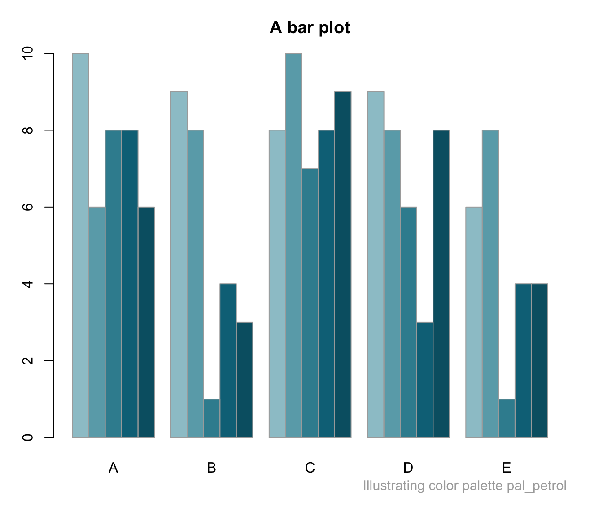
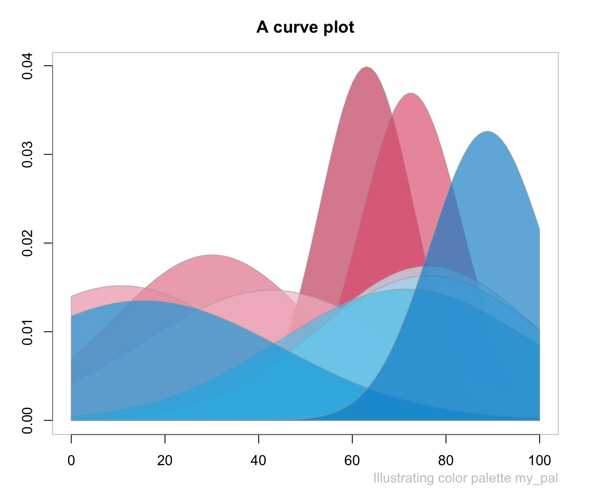
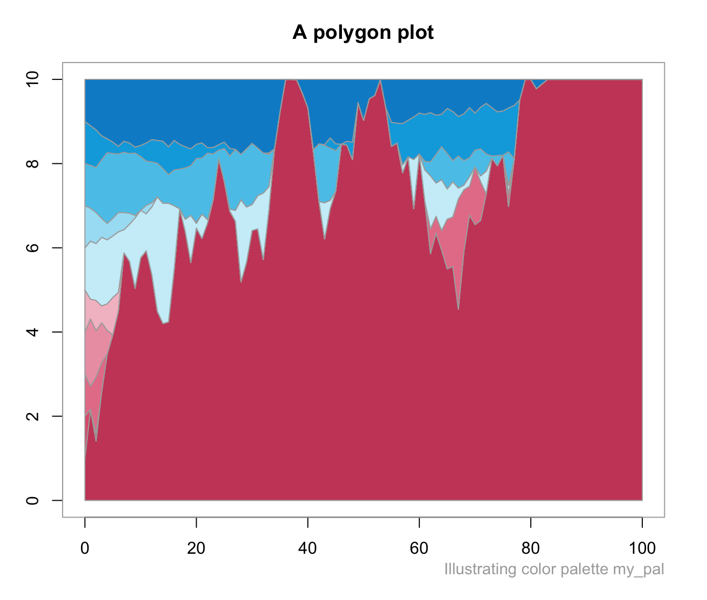
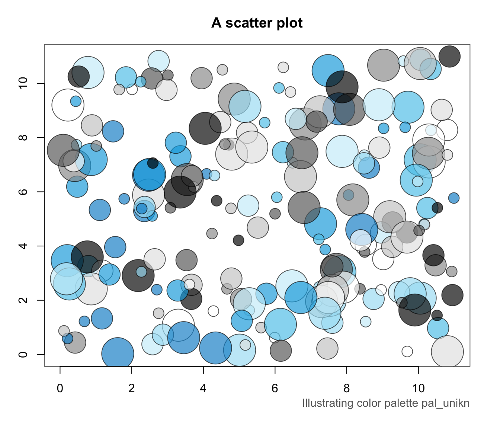

demopal provides an example plot of some type
to illustrate a color palette pal.
Arguments
- pal
A color palette (to be illustrated). Default:
pal = pal_unikn.- type
The type of plot to be used (as character string or integer value). Permissible types are
"bar","curve","mosaic","polygon", or"scatter"(or an integer value from 1 to 5, respectively).- pal_name
A name for the input color palette
pal(shown on bottom-right margin). Default:pal_name = NULL(deparsing to input name).- ...
Auxiliary arguments passed to
type-specific plots (see details).
Details
The demopal wrapper function passes a range of arguments to more specific functions.
Common arguments include:
col_parDefault color forpar(col);alphaDefault value for color transparency (in 0:1);nA scaling parameter (for random data generation);mainplot title (on top);subplot subtitle (on right margin);seedA random seed value (for reproducible randomness).
The fit between a color palette pal and plot type
depends on the uses of colors in a plot.
For instance, overlaps of transparent color areas can be evaluated
with plot type = "curve" or plot type = "scatter"
(and 0 < alpha < 1).
Some functions additionally accept type-specific arguments
(e.g., beside, horiz, and as_prop, for plot type = "bar",
and cex for plot type = "scatter").
The type-specific functions usually generate some random data
(scaled by a parameter n) that is being plotted.
This data is returned (as an invisible R object)
to enable a plot's reconstruction.
Examples
demopal(pal = pal_petrol, type = 1)

my_pal <- c(rev(pal_pinky), pal_seeblau)
# Selecting plot type:
demopal(my_pal, type = 2) # by numeric index

demopal(my_pal, type = "polygon") # by name

# Passing type-specific arguments:
demopal(type = "scatter", col_par = "black", n = 200, cex = c(2, 4, 6), seed = 101)
